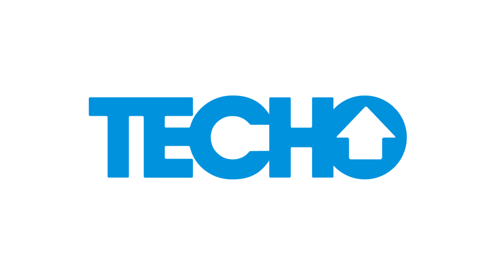
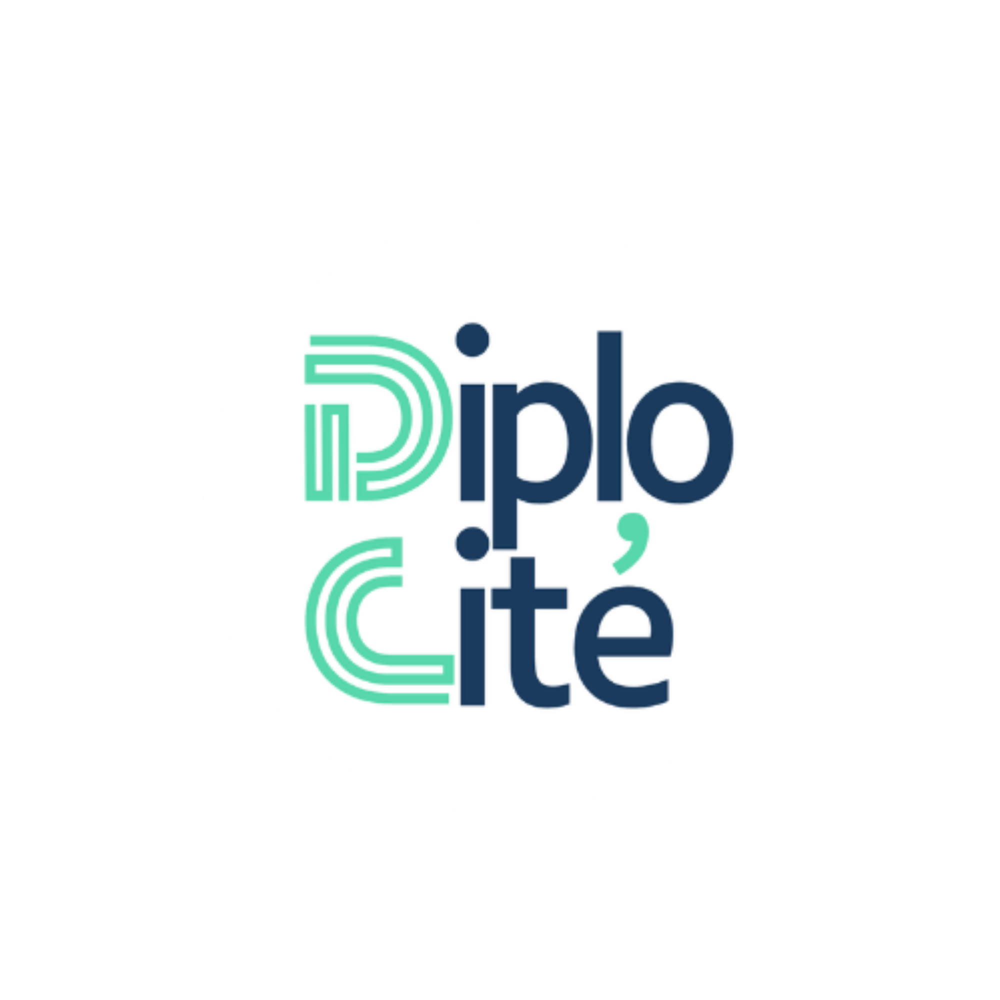
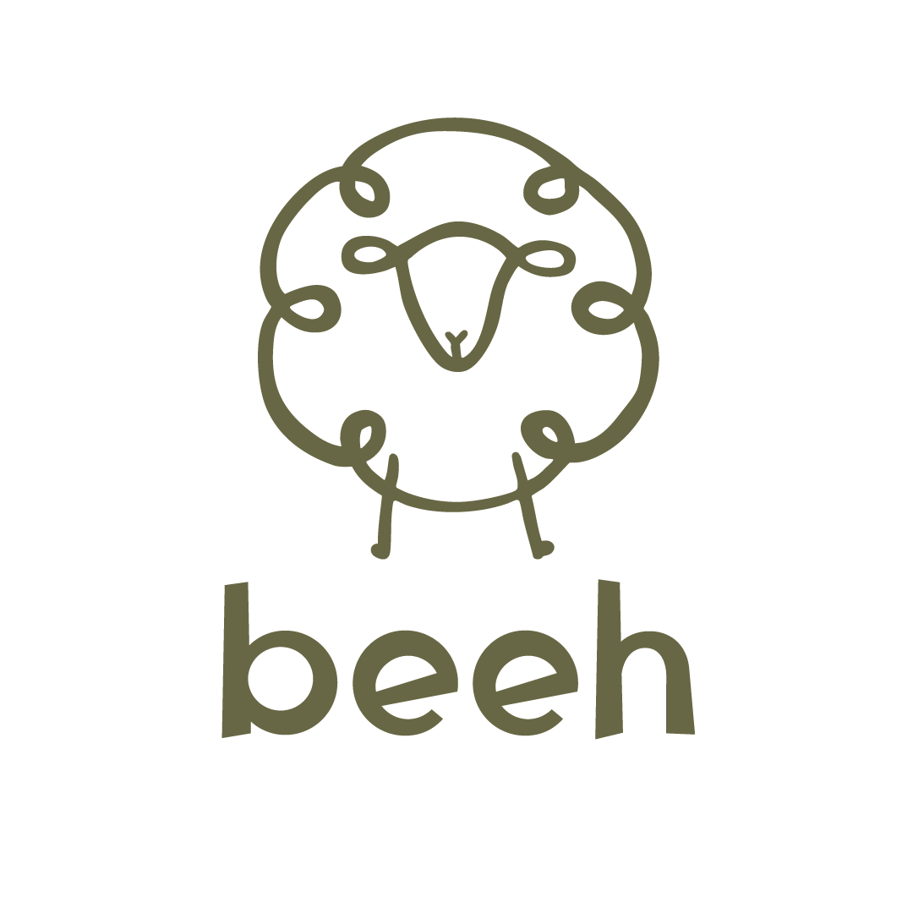

Definir
¿Necesitás ordenar tu comunicación?
Diagnóstico, estrategia y comunicación organizacional.
Transformo desafíos en estrategias de comunicación que conectan, posicionan y generan resultados.
Conocé mi trabajoSoy Giuliana, consultora en comunicación con siete años de experiencia trabajando con PyMEs, organizaciones internacionales, ONGs y empresas multinacionales. Mi trayectoria comenzó en Uruguay y se expandió hacia Europa con mi formación en Sciences Po París. Mi experiencia en entornos multiculturales me permite conectar diversas perspectivas, comprender distintos públicos y desarrollar estrategias de comunicación adaptadas a cada desafío.
¿Necesitás ordenar tu comunicación?
Diagnóstico, estrategia y comunicación organizacional.
¿Querés construir o fortalecer tu marca?
Branding, posicionamiento, identidad y storytelling.
¿Querés llegar mejor a tus públicos?
Contenido, redes, plataformas y marketing digital.
¿Tenés una campaña, evento o proyecto que llevar adelante?
Campañas, eventos, influencia y proyectos editoriales.
Definimos qué comunicar, para quién, con qué posicionamiento y hacia dónde queremos llegar.
Convertimos esa estrategia en marcas, contenidos, campañas, plataformas y experiencias.
Evaluamos resultados, aprendemos de los datos y ajustamos la estrategia para seguir avanzando.
He trabajado junto a PyMEs, organizaciones internacionales, ONGs y empresas multinacionales, desarrollando proyectos de comunicación en Uruguay, Francia y otros contextos internacionales.



